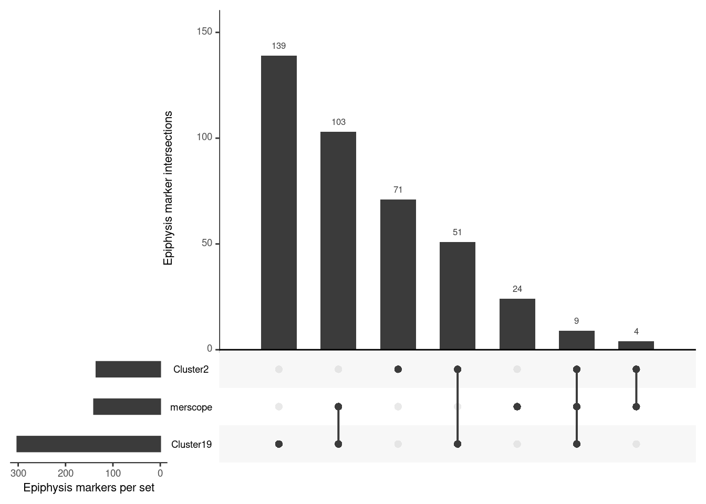

load("../foxd3flh-5k_ss-e107.RData")The parapineal ‘cell type’ - Part 2
1 Identification of epiphysis cells
1.1 Premise
In the previous section, two putative epiphysis cell clusters were identified in a ~30-32 hpf scRNA-seq dataset. Can this result be replicated in the embryo? In other words, how likely are the inferred clusters to be from the epiphysis?
1.2 Experimental design
MERFISH (Multiplexed Error-Robust Fluorescence in situ Hybridisation) is an imaging-based approach capable of measuring RNA transcripts at single cell resolution. Unlike the destructive nature of scRNA-seq, in vivo spatial information (where each measured transcript is located in the sample) is preserved. Vizgen MERSCOPE offers a commercial platform to perform MERFISH and was employed for this study.

As illustrated above, only x2 10 micron tissue sections were collected for MERFISH. This was restricted by the maximum imaging area on the MERSCOPE slide. Therefore up to 5 embryos were simultaneously mounted in a tissue block, with the caveat that there will be unavoidable inter-embryo variation of the resulting tissue slices. Depending on how the embryo was mounted, the first (and second) section could be from the parapineal/pineal region (sox1a / bsx ++), or 1 or 2 planes later towards the pineal region only (bsx +).
The final dataset consists of x2 sections each of x2 biological replicates/embryos (wild type, ~32-36 hpf). For sake of brevity, each section is named ‘anterior’ or ‘posterior’ depending on their relative location within the embryo they originated from.
1.3 Initialise R environment
2 MERSCOPE panel design
Vizgen offers the option to build custom gene panels of up to 140, 300, 500 or 1000 genes at increasingly extortionate prices. Since the aim of the MERFISH experiment was to query the two putative scRNA-seq epiphysis clusters 2 and 19 from the previously analysed ss_e107 SeuratObject, a 140 gene panel was designed based on this result.
# Genes that are well known to be expressed in the epiphysis
markers <- c("bsx", "noto", "otx5")
dittoPlotVarsAcrossGroups(ss_e107, markers, group.by = "SCT_snn_res.1",
vlnplot.lineweight = 0.2, jitter.size = 0.3,
main = "ss_e107 (mean of bsx + noto + otx5)")
2.1 Call markers
There is an overwhelming number of methods in the scientific literature for scRNA-seq marker identification. Depending on your goal(s) for performing marker identification, some approaches might be better suited than others.
In this case, the main goal is to shortlist genes that could be MERFISH-measured in the embryo, including (hopefully) the epiphysis region. As a first pass, we run FindMarkers (implemented in Seurat) on clusters 2 and 19.
cl2.de.markers <- FindMarkers(ss_e107, ident.1 = "2", ident.2 = NULL, only.pos = TRUE, assay = "RNA")
nrow(cl2.de.markers)[1] 6936# Add new column of gene IDs called 'markers'
cl2.de.markers$markers <- rownames(cl2.de.markers)
head(cl2.de.markers, 10) p_val avg_log2FC pct.1 pct.2 p_val_adj markers
otx1 0 2.755492 0.938 0.100 0 otx1
otx2b 0 3.250256 0.810 0.044 0 otx2b
barhl2 0 3.424283 0.812 0.074 0 barhl2
si:ch211-69b22.5 0 2.500534 0.808 0.070 0 si:ch211-69b22.5
otx2a 0 2.263520 0.821 0.097 0 otx2a
wnt4 0 2.333122 0.783 0.076 0 wnt4
fabp11a 0 4.230501 0.968 0.270 0 fabp11a
zic4 0 2.272131 0.778 0.096 0 zic4
sall3b 0 2.044002 0.670 0.055 0 sall3b
tpbga 0 3.059875 0.655 0.045 0 tpbgacl19.de.markers <- FindMarkers(ss_e107, ident.1 = "19", ident.2 = NULL, only.pos = TRUE, assay = "RNA")
nrow(cl19.de.markers)[1] 11487# Add new column of gene IDs called 'markers'
cl19.de.markers$markers <- rownames(cl19.de.markers)
head(cl19.de.markers, 10) p_val avg_log2FC pct.1 pct.2 p_val_adj
bsx 0.000000e+00 5.801700 0.910 0.030 0.000000e+00
isl1 0.000000e+00 5.476998 0.888 0.031 0.000000e+00
six3a 0.000000e+00 6.449455 0.708 0.014 0.000000e+00
layna 0.000000e+00 6.930195 0.663 0.011 0.000000e+00
si:ch211-67e16.11 0.000000e+00 5.451577 0.663 0.014 0.000000e+00
zgc:165481 8.312723e-294 6.072816 0.629 0.013 1.990565e-289
LHX3 2.098162e-279 8.568871 0.326 0.001 5.024258e-275
btbd3b 6.471199e-274 4.982485 0.573 0.011 1.549593e-269
nxph1 3.397695e-248 6.210768 0.742 0.027 8.136121e-244
skor1b 1.170595e-245 6.371964 0.618 0.017 2.803108e-241
markers
bsx bsx
isl1 isl1
six3a six3a
layna layna
si:ch211-67e16.11 si:ch211-67e16.11
zgc:165481 zgc:165481
LHX3 LHX3
btbd3b btbd3b
nxph1 nxph1
skor1b skor1bUsing the default cut-offs resulted in ~7 and 11k of markers. Clearly these need to be significantly narrowed down to build a 140 gene panel.
2.2 Cross-reference with ZFIN
This was achieved by mining ZFIN gene expression data for called markers whose expression were detected in the epiphysis. Of course, this is not fool-proof and heavily depends on the accuracy and completion of ZFIN’s annotation. There may be many genes whose expression in the epiphysis were not annotated as such and therefore will be missed (more likely), and vice versa (exception rather than rule).
Follow the link above for the code to pull ZFIN data-of-interest into a dataframe gex_ISH used below :
gex <- read.delim(url("https://zfin.org/downloads/wildtype-expression_fish.txt"), header = FALSE, sep ="\t")
head(gex, 5) V1 V2 V3 V4 V5 V6 V7
1 ZDB-GENE-060824-3 a1cf WT ZFA:0000123 liver
2 ZDB-GENE-060824-3 a1cf WT ZFA:0000123 liver
3 ZDB-GENE-060824-3 a1cf WT ZFA:0001094 whole organism
4 ZDB-GENE-090212-1 a2ml WT ZFA:0000112 gut
5 ZDB-GENE-090212-1 a2ml WT ZFA:0000123 liver
V8 V9 V10
1 Adult Adult Reverse transcription PCR
2 Larval:Protruding-mouth Larval:Day 5 mRNA in situ hybridization
3 Adult Adult Reverse transcription PCR
4 Larval:Days 7-13 Larval:Days 7-13 mRNA in situ hybridization
5 Larval:Day 4 Larval:Day 4 mRNA in situ hybridization
V11 V12 V13 V14 V15
1 MMO:0000655 ZDB-PUB-060501-4 ZDB-FISH-150901-29105
2 MMO:0000658 ZDB-PUB-060501-4 ZDB-FISH-150901-29105
3 MMO:0000655 ZDB-PUB-060501-4 ZDB-FISH-150901-29105
4 MMO:0000658 ZDB-PUB-081121-13 ZDB-FISH-150901-29105
5 MMO:0000658 ZDB-PUB-081121-13 ZDB-FISH-150901-29105# Add column IDs (based on Column Headers in the Downloads page above)
colnames(gex) <- c("GeneID", "GeneSymbol","FishName","SuperStructureID","SuperStructureName",
"SubStructureID","SubStructureName","StartStage","EndStage","Assay",
"AssayMMOID","PublicationID","ProbeID","AntibodyID","FishID")
gex_ISH <- gex[which(gex$FishName=='WT' | gex$FishName=='AB/TU'), ]
gex_ISH <- gex_ISH[which(gex_ISH$Assay=='mRNA in situ hybridization'), ]
gex_ISH <- data.frame(gex_ISH$GeneSymbol, gex_ISH$SuperStructureName)
colnames(gex_ISH) <- c("GeneSymbol","Structure")
head(gex_ISH, 10) GeneSymbol Structure
1 a1cf liver
2 a2ml gut
3 a2ml liver
4 a2ml liver
5 a2ml liver
6 a2ml yolk
7 a2ml yolk
8 a2ml yolk syncytial layer
9 a2ml yolk syncytial layer
10 a2ml yolk syncytial layer# Match every marker with every known WISH-detected Structure
cl2.de.markers.epiphysis <- left_join(cl2.de.markers, gex_ISH, by = c("markers" = "GeneSymbol"))
head(cl2.de.markers.epiphysis, 5) p_val avg_log2FC pct.1 pct.2 p_val_adj markers Structure
1 0 2.755492 0.938 0.1 0 otx1 alar plate midbrain region
2 0 2.755492 0.938 0.1 0 otx1 anterior axial hypoblast
3 0 2.755492 0.938 0.1 0 otx1 axis
4 0 2.755492 0.938 0.1 0 otx1 basal plate midbrain region
5 0 2.755492 0.938 0.1 0 otx1 diencephalon# Filter for "epiphysis" only
cl2.de.markers.epiphysis <- distinct(filter(cl2.de.markers.epiphysis, Structure=="epiphysis"))
head(cl2.de.markers.epiphysis, 5) p_val avg_log2FC pct.1 pct.2 p_val_adj markers Structure
1 0.000000e+00 2.755492 0.938 0.100 0.000000e+00 otx1 epiphysis
2 0.000000e+00 3.250256 0.810 0.044 0.000000e+00 otx2b epiphysis
3 0.000000e+00 2.263520 0.821 0.097 0.000000e+00 otx2a epiphysis
4 0.000000e+00 2.333122 0.783 0.076 0.000000e+00 wnt4 epiphysis
5 4.197046e-284 2.721522 0.959 0.210 1.005025e-279 cldn5a epiphysisnrow(cl2.de.markers.epiphysis)[1] 135# Match every marker with every known WISH-detected Structure
cl19.de.markers.epiphysis <- left_join(cl19.de.markers, gex_ISH, by = c("markers" = "GeneSymbol"))
head(cl19.de.markers.epiphysis, 5) p_val avg_log2FC pct.1 pct.2 p_val_adj markers Structure
1 0 5.8017 0.91 0.03 0 bsx brain
2 0 5.8017 0.91 0.03 0 bsx brain
3 0 5.8017 0.91 0.03 0 bsx brain
4 0 5.8017 0.91 0.03 0 bsx caudal tuberculum
5 0 5.8017 0.91 0.03 0 bsx caudal tuberculum# Filter for "epiphysis" only
cl19.de.markers.epiphysis <- distinct(filter(cl19.de.markers.epiphysis, Structure=="epiphysis"))
head(cl19.de.markers.epiphysis, 5) p_val avg_log2FC pct.1 pct.2 p_val_adj markers Structure
1 0.000000e+00 5.801700 0.910 0.030 0.000000e+00 bsx epiphysis
2 3.397695e-248 6.210768 0.742 0.027 8.136121e-244 nxph1 epiphysis
3 2.688572e-217 6.833524 0.337 0.003 6.438054e-213 rcvrn2 epiphysis
4 9.997499e-179 3.981461 0.865 0.062 2.394001e-174 esrrga epiphysis
5 4.366307e-176 5.705932 0.404 0.007 1.045556e-171 sall3a epiphysisnrow(cl19.de.markers.epiphysis)[1] 302This step identifies a significantly more manageable ~100 and 300 candidate genes per cluster for a MERFISH experiment.
At this point, the gene lists were manually shortlisted for inclusion into the final MERSCOPE 140 Gene Panel, with decreasing priority below.
Genes from the literature/previous work
Clanton et al. 2013
Khuansuwan et al. 2016
Schredelseker & Driever, 2018
Genes related to GABA synthesis and signalling
- (one-liner explanation from S Wilson? TBC)
Selected from Cluster
2and19candidate gene lists, that generally have some previous links to neurogenesis
# Save gene lists to file
write.table(data.frame(cl2.de.markers.epiphysis$markers), file="./annotations/cl2_de_markers_epiphysis.txt", row.names=FALSE, quote=FALSE)
write.table(data.frame(cl19.de.markers.epiphysis$markers), file="./annotations/cl19_de_markers_epiphysis.txt", row.names=FALSE, quote=FALSE)2.3 140 Gene Panel for MERSCOPE - final
- Link to panel codebook
merscope <- read.csv('./annotations/codebook_0_AM0765_zebrafishChongMorrisonAsymmetry.csv', header=TRUE, row.names=1)
head(merscope, 10) # print first 10 rows only id barcodeType V0001T8B1 V0002T8B1 V0003T8B1 V0004T8B1
aanat2 ENSDART00000018205 merfish 0 0 1 0
alcama ENSDART00000129400 merfish 0 0 0 0
aldocb ENSDART00000026766 merfish 0 1 0 1
arr3a ENSDART00000078996 merfish 0 0 0 1
arr3b ENSDART00000158077 merfish 0 0 0 0
ascl1a ENSDART00000056005 merfish 0 0 0 0
asip2b ENSDART00000185699 merfish 0 0 0 0
atp1a3a ENSDART00000104950 merfish 0 0 0 1
atp1b1b ENSDART00000139387 merfish 0 0 0 0
atp1b2a ENSDART00000160044 merfish 0 1 0 0
V0005T8B1 V0006T8B1 V0007T8B1 V0008T8B1 V0009T8B1 V0010T8B1 V0011T8B1
aanat2 0 0 0 0 0 0 1
alcama 0 0 0 0 0 0 0
aldocb 0 0 0 0 1 0 0
arr3a 0 0 0 1 0 0 0
arr3b 1 1 1 0 1 0 0
ascl1a 0 0 1 0 1 0 0
asip2b 1 0 1 0 0 0 0
atp1a3a 0 0 0 0 0 1 1
atp1b1b 0 0 0 1 0 1 0
atp1b2a 0 0 0 0 0 0 0
V0012T8B1 V0013T8B1 V0014T8B1 V0015T8B1 V0016T8B1 V0017T8B1 V0018T8B1
aanat2 0 0 0 1 1 0 0
alcama 0 1 1 1 0 1 0
aldocb 0 0 0 1 0 0 0
arr3a 0 0 1 0 0 1 0
arr3b 0 0 0 0 0 0 0
ascl1a 0 0 0 1 0 1 0
asip2b 0 1 0 1 0 0 0
atp1a3a 0 0 0 0 1 0 0
atp1b1b 0 1 0 0 0 1 0
atp1b2a 0 1 0 1 0 0 12.3.1 Composition of the final panel
UpSet plots are an excellent alternative to Venn diagrams for visualising intersection between the three gene lists above.
##### Explore intersection of markers between clusters #####
library(UpSetR)
cl2 <- read.table("./annotations/cl2_de_markers_epiphysis.txt", header=TRUE)
cl2$cluster <- "Cluster2"
colnames(cl2) <- c("markers","cluster")
cl19 <- read.table("./annotations/cl19_de_markers_epiphysis.txt", header=TRUE)
cl19$cluster <- "Cluster19"
colnames(cl19) <- c("markers","cluster")
merscope <- merscope[1:140,] # 140 gene targets, remove 40 Blanks
merscope$markers <- rownames(merscope)
merscope$cluster <- "merscope"
merscope <- data.frame(merscope$markers, merscope$cluster)
colnames(merscope) <- c("markers","cluster")
all.markers <- rbind(cl2, cl19, merscope)
# Format data to serve as input for UpSetR.
input <- all.markers %>% mutate(truval=TRUE) %>% spread(cluster, truval, fill=FALSE)
input <- input %>%
mutate(across(2:4, ~ as.integer(as.character(factor(., levels = c("TRUE", "FALSE"), labels = c(1, 0))))))
# UpSetR plot - Conway et al. 2017
upset(input, empty.intersections = "on", order.by = "freq", mainbar.y.label = "Epiphysis marker intersections", sets.x.label = "Epiphysis markers per set")
Of the 140 genes in the MERSCOPE panel;
The large majority, 103, are specific to Cluster
19candidate genes9 are shared between Cluster
2and194 are specific to Cluster
2candidate genes24 are from neither i.e. from the literature and GABA genes
2.3.2 Expression pattern in ss_e107
To explore the expression of these genes in the ss_e107 scRNA-seq dataset, let’s first check that all the panel genes are present in the SeuratObject. Otherwise, plotting will throw errors.
# MERSCOPE panel genes
merscope <- read.csv("./annotations/codebook_0_AM0765_zebrafishChongMorrisonAsymmetry.csv", header=TRUE)
merscope <- merscope[1:140,]
# 3 genes filtered out in ss_e107 dataset, remove these otherwise plotting ss_e107 will throw error
genes <- data.frame(rownames(ss_e107))
colnames(genes) <- "gene"
merscope_check <- dplyr::left_join(genes, merscope, by = c("gene" = "name")) %>% filter(barcodeType=="merfish") # 137 genes
anti_join(merscope, merscope_check, by=join_by(name == gene)) # to get names of these genes (gfi1ab, opn1sw1, rho) name id barcodeType V0001T8B1 V0002T8B1 V0003T8B1
1 gfi1ab ENSDART00000065139 merfish 0 0 0
2 opn1sw1 ENSDART00000067160 merfish 1 0 0
3 rho ENSDART00000027000 merfish 1 0 0
V0004T8B1 V0005T8B1 V0006T8B1 V0007T8B1 V0008T8B1 V0009T8B1 V0010T8B1
1 1 1 0 0 0 0 0
2 0 0 0 1 0 0 1
3 0 0 0 0 0 0 0
V0011T8B1 V0012T8B1 V0013T8B1 V0014T8B1 V0015T8B1 V0016T8B1 V0017T8B1
1 0 0 1 1 0 0 0
2 0 0 0 0 0 0 1
3 0 1 0 1 0 0 1
V0018T8B1
1 0
2 0
3 0Plot a heatmap of the 140 (137) panel genes.
dittoHeatmap(ss_e107, merscope_check$gene,
annot.by = "SCT_snn_res.1",
scaled.to.max = TRUE,
show_colnames = FALSE,
show_rownames = TRUE, complex=TRUE, fontsize_row = 3)This heatmap illustrates the on-going challenge - that the epiphysis shares many of its expressed genes with other neuronal and/or cranial cell types. Despite ‘marker identification’ followed by filtering for those with pre-validated in vivo expression in the epiphysis, these genes as a whole do not specifically mark out the (putative) epiphysis clusters 2 and 19. Therefore, from a bioinformatics perspective, using a combination of genes is vital to ‘extract’ these cells - as demonstrated in Aim 1 Part 1: Identify epiphysis clusters.
2.4 Additional insights
However, in the painstaking iterative process of going through the gene lists above and cross-checking with ZFIN, two groups of genes were noted to display specific expression in the epiphysis and retina. The ones highlighted in bold were called in Clusters 2 and 19 candidate gene lists.
Recoverins -
rcvrna,rcvrnb,rcvrn2,rcvrn3Phosphodiesterases -
pde6gb,pde6c,pde6d… (too many to list).
The recoverins and pde6gb in particular had striking epiphysis- plus/minus retina-specific expression patterns in the embryo. They reflect the photoreceptive characteristics of these organs. Let’s look at these genes together with the three markers previously used to identify epiphysis clusters - bsx, noto, otx5. Sox1a is included as the parapineal marker.
epiphysis_genes <- c("bsx", "noto", "otx5", "sox1a",
"rcvrna", "rcvrnb", "rcvrn2", "rcvrn3",
"pde6gb")
dittoDotPlot(ss_e107, epiphysis_genes, group.by="SCT_snn_res.1")Cluster 19 demonstrated robust expression of several of these ‘ZFIN-validated’ genes. Remarkably, the remaining clusters, including Cluster 2, showed co-expression of these genes as well to a certain extent…are these ‘contaminating’ retinal photoreceptor precursors? However, the parapineal marker sox1a is still only detected in Clusters 2 and 19.
With these lessons in mind, we proceed with the MERSCOPE experiment to gather additional evidence and wrap-up Aim 1.
3 Pre-processing of MERSCOPE data
MERSCOPE Vizualizer is a free software provided by Vizgen as an out-of-box solution to explore results from MERSCOPE runs. The following images are exported using the following settings: Transcripts Z-plane = All; Z-plane = 2 ; Images = DAPI channel only. The MERFISH signal coverage clearly encompasses the epiphysis region, which is promising. However, these images also have the cell setting ON…and it is clear that the default cell segmentation algorithm in the run is incompatible with the samples.
3.1 Cell segmentation
Through a lot of trial and error, I worked out that Cellpose‘s cyto3 model released with v3 (Feb 2024) had the best performance in segmenting these images. In addition, Vizgen’s VPT tool with the Cellpose2 plugin enables performing custom 2-task segmentation runs, where the results of two (up to six) segmentation settings can be harmonised for a ’consensus’-like result (and perhaps improve sensitivity). The final pipeline is implemented as an apptainer container that runs VPT-Cellpose2 to perform 2-task segmentation using the cyto3 model.
# apptainer.def file4 Clustering of MERSCOPE data
in progress
5 Summary notes for Aim 1 - Part 2
in progress
in progress
6 References
6.1 Packages
pkgs <- cite_packages(output = "table", out.dir = ".")
knitr::kable(pkgs)| Package | Version | Citation |
|---|---|---|
| base | 4.4.2 | R Core Team (2024) |
| BiocParallel | 1.38.0 | (BiocPar?)…. |
| dittoSeq | 1.16.0 | Bunis et al. (2020) |
| future | 1.34.0 | Bengtsson (2021) |
| knitr | 1.49 | (knitr20?)…. |
| Matrix | 1.7.0 | Bates, Maechler, and Jagan (2024) |
| RCurl | 1.98.1.16 | Temple Lang (2024) |
| reticulate | 1.40.0 | Ushey, Allaire, and Tang (2024) |
| rmarkdown | 2.29 | (rmarkdo?)…. |
| scDblFinder | 1.18.0 | Germain et al. (2022) |
| Seurat | 5.1.0 | (Seurat2?)…. |
| SingleCellExperiment | 1.26.0 | (SingleC?)…. |
| tidyverse | 2.0.0 | Wickham et al. (2019) |
| UpSetR | 1.4.0 | Gehlenborg (2019) |
6.2 Previous work
- I. Lekk, V. Duboc, A. Faro, S. Nicolaou, P. Blader and S.W. Wilson. Sox1a mediates the ability of the parapineal to impart habenular left-right asymmetry. eLife (2019), e47376, 8, https://doi.org/10.7554/eLife.47376
- S. Khuansuwan, J. A. Clanton, B. J. Dean, J. G. Patton, J. T. Gamse; A transcription factor network controls cell migration and fate decisions in the developing zebrafish pineal complex. Development 15 July 2016; 143 (14): 2641–2650, https://doi.org/10.1242/dev.131680
- J. A. Clanton, K. D. Hope, J. T. Gamse; Fgf signaling governs cell fate in the zebrafish pineal complex. Development 15 January 2013; 140 (2): 323–332, https://doi.org/10.1242/dev.083709
- Theresa Schredelseker, Wolfgang Driever; Bsx controls pineal complex development. Development 1 July 2018; 145 (13): dev163477, https://doi.org/10.1242/dev.163477
7 Session Info
sessionInfo()R version 4.4.2 (2024-10-31)
Platform: x86_64-pc-linux-gnu
Running under: Ubuntu 22.04.5 LTS
Matrix products: default
BLAS: /usr/lib/x86_64-linux-gnu/blas/libblas.so.3.10.0
LAPACK: /usr/lib/x86_64-linux-gnu/lapack/liblapack.so.3.10.0
locale:
[1] LC_CTYPE=en_GB.UTF-8 LC_NUMERIC=C
[3] LC_TIME=en_GB.UTF-8 LC_COLLATE=en_GB.UTF-8
[5] LC_MONETARY=en_GB.UTF-8 LC_MESSAGES=en_GB.UTF-8
[7] LC_PAPER=en_GB.UTF-8 LC_NAME=C
[9] LC_ADDRESS=C LC_TELEPHONE=C
[11] LC_MEASUREMENT=en_GB.UTF-8 LC_IDENTIFICATION=C
time zone: Europe/London
tzcode source: system (glibc)
attached base packages:
[1] stats4 stats graphics grDevices utils datasets methods
[8] base
other attached packages:
[1] UpSetR_1.4.0 grateful_0.2.10
[3] SingleCellExperiment_1.26.0 SummarizedExperiment_1.34.0
[5] Biobase_2.64.0 GenomicRanges_1.56.2
[7] GenomeInfoDb_1.40.1 IRanges_2.38.1
[9] S4Vectors_0.42.1 BiocGenerics_0.50.0
[11] MatrixGenerics_1.16.0 matrixStats_1.4.1
[13] dittoSeq_1.16.0 lubridate_1.9.3
[15] forcats_1.0.0 stringr_1.5.1
[17] dplyr_1.1.4 purrr_1.0.2
[19] readr_2.1.5 tidyr_1.3.1
[21] tibble_3.2.1 ggplot2_3.5.1
[23] tidyverse_2.0.0 Seurat_5.1.0
[25] SeuratObject_5.0.2 sp_2.1-4
[27] reticulate_1.40.0 BiocParallel_1.38.0
[29] future_1.34.0
loaded via a namespace (and not attached):
[1] RcppAnnoy_0.0.22 splines_4.4.2 later_1.3.2
[4] polyclip_1.10-7 fastDummies_1.7.4 lifecycle_1.0.4
[7] doParallel_1.0.17 globals_0.16.3 lattice_0.22-6
[10] MASS_7.3-61 magrittr_2.0.3 limma_3.60.6
[13] plotly_4.10.4 rmarkdown_2.29 yaml_2.3.10
[16] httpuv_1.6.15 sctransform_0.4.1 spam_2.11-0
[19] spatstat.sparse_3.1-0 cowplot_1.1.3 pbapply_1.7-2
[22] RColorBrewer_1.1-3 abind_1.4-8 zlibbioc_1.50.0
[25] Rtsne_0.17 presto_1.0.0 rappdirs_0.3.3
[28] circlize_0.4.16 GenomeInfoDbData_1.2.12 ggrepel_0.9.6
[31] irlba_2.3.5.1 listenv_0.9.1 spatstat.utils_3.1-1
[34] pheatmap_1.0.12 goftest_1.2-3 RSpectra_0.16-2
[37] spatstat.random_3.3-2 fitdistrplus_1.2-1 parallelly_1.39.0
[40] leiden_0.4.3.1 codetools_0.2-20 DelayedArray_0.30.1
[43] shape_1.4.6.1 tidyselect_1.2.1 UCSC.utils_1.0.0
[46] farver_2.1.2 spatstat.explore_3.3-3 jsonlite_1.8.9
[49] GetoptLong_1.0.5 progressr_0.15.0 ggridges_0.5.6
[52] survival_3.7-0 iterators_1.0.14 foreach_1.5.2
[55] tools_4.4.2 ica_1.0-3 Rcpp_1.0.13-1
[58] glue_1.8.0 gridExtra_2.3 SparseArray_1.4.8
[61] xfun_0.49 withr_3.0.2 fastmap_1.2.0
[64] fansi_1.0.6 digest_0.6.37 timechange_0.3.0
[67] R6_2.5.1 mime_0.12 colorspace_2.1-1
[70] Cairo_1.6-2 scattermore_1.2 tensor_1.5
[73] spatstat.data_3.1-2 utf8_1.2.4 generics_0.1.3
[76] renv_1.0.11 data.table_1.16.2 httr_1.4.7
[79] htmlwidgets_1.6.4 S4Arrays_1.4.1 uwot_0.2.2
[82] pkgconfig_2.0.3 gtable_0.3.6 ComplexHeatmap_2.20.0
[85] lmtest_0.9-40 XVector_0.44.0 htmltools_0.5.8.1
[88] dotCall64_1.2 clue_0.3-66 scales_1.3.0
[91] png_0.1-8 spatstat.univar_3.1-1 knitr_1.49
[94] rstudioapi_0.17.1 rjson_0.2.23 tzdb_0.4.0
[97] reshape2_1.4.4 nlme_3.1-165 zoo_1.8-12
[100] GlobalOptions_0.1.2 KernSmooth_2.23-24 parallel_4.4.2
[103] miniUI_0.1.1.1 pillar_1.9.0 grid_4.4.2
[106] vctrs_0.6.5 RANN_2.6.2 promises_1.3.0
[109] xtable_1.8-4 cluster_2.1.6 evaluate_1.0.1
[112] cli_3.6.3 compiler_4.4.2 rlang_1.1.4
[115] crayon_1.5.3 future.apply_1.11.3 labeling_0.4.3
[118] plyr_1.8.9 stringi_1.8.4 viridisLite_0.4.2
[121] deldir_2.0-4 munsell_0.5.1 lazyeval_0.2.2
[124] spatstat.geom_3.3-3 Matrix_1.7-0 RcppHNSW_0.6.0
[127] hms_1.1.3 patchwork_1.3.0 statmod_1.5.0
[130] shiny_1.9.1 ROCR_1.0-11 igraph_2.1.1 References
Bates, Douglas, Martin Maechler, and Mikael Jagan. 2024. Matrix: Sparse and Dense Matrix Classes and Methods. https://CRAN.R-project.org/package=Matrix.
Bengtsson, Henrik. 2021. “A Unifying Framework for Parallel and Distributed Processing in r Using Futures.” The R Journal 13 (2): 208–27. https://doi.org/10.32614/RJ-2021-048.
Bunis, Daniel G., Jared Andrews, Gabriela K. Fragiadakis, Trevor D. Burt, and Marina Sirota. 2020. “dittoSeq: Universal User-Friendly Single-Cell and Bulk RNA Sequencing Visualization Toolkit.” Bioinformatics, no. 22-23 (December): 5535–36. https://doi.org/10.1093/bioinformatics/btaa1011.
Gehlenborg, Nils. 2019. UpSetR: A More Scalable Alternative to Venn and Euler Diagrams for Visualizing Intersecting Sets. https://CRAN.R-project.org/package=UpSetR.
Germain, Pierre-Luc, Aaron Lun, Carlos Garcia Meixide, Will Macnair, and Mark D. Robinson. 2022. “Doublet Identification in Single-Cell Sequencing Data Using scDblFinder.” F1000research. https://doi.org/10.12688/f1000research.73600.2.
R Core Team. 2024. R: A Language and Environment for Statistical Computing. Vienna, Austria: R Foundation for Statistical Computing. https://www.R-project.org/.
Temple Lang, Duncan. 2024. RCurl: General Network (HTTP/FTP/...) Client Interface for r. https://CRAN.R-project.org/package=RCurl.
Ushey, Kevin, JJ Allaire, and Yuan Tang. 2024. reticulate: Interface to “Python”. https://CRAN.R-project.org/package=reticulate.
Wickham, Hadley, Mara Averick, Jennifer Bryan, Winston Chang, Lucy D’Agostino McGowan, Romain François, Garrett Grolemund, et al. 2019. “Welcome to the tidyverse.” Journal of Open Source Software 4 (43): 1686. https://doi.org/10.21105/joss.01686.